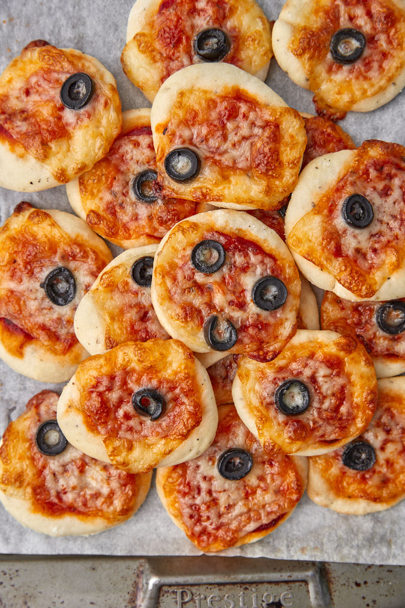

Mini pizza
De petites pizzas individuelles idéales pour l’apéro.
Ingrédients :
- Pâte à pizza
- Sauce tomate
- Fromage râpé
- Olives, jambon, champignons (au choix)
- Herbes (origan)
Préparation :
- Étale la pâte et découpe des cercles avec un emporte‑pièce ou un verre.
- Garnis chaque mini pizza de sauce tomate, fromage et toppings de ton choix.
- Fais cuire 10‑12 min au four à 200°C.
← Retour à l'accueil